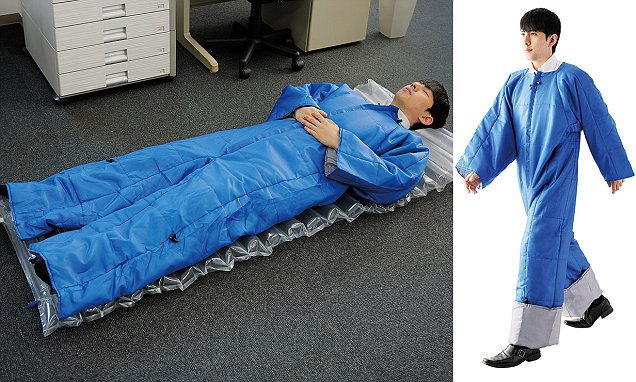

Britons Spend Six Months of Their Lives Discussing the Weather
By: Sonny Day
The weather-obsessed British spend on average six months of their lives talking about whether it's going to rain or shine, according to a survey published recently.
Speculation about whether it's going to be wet, complaints about the cold and murmurings about the heat are also the first points of conversation with strangers or colleagues for 58% of Britons, the survey found. The study of 2,018 adults by pollsters found Britons talk about the weather for more than two days [49 hours] every year; the subject comes up more often than work, what is on television, sport, or gossip.
Nineteen percent of over 65s questioned also believe they can predict the weather as well as a professional weatherman.
The most likely explanation for the British fascination with weather is that the food is so boring, they have to find something else to discuss.
Rest at Your Own Risk: Moscow Benches to Publicly Display Sitters’ Weight
By: Boris Badenov
In a bid they say will raise fitness consciousness, Moscow’s city officials are replacing ordinary park benches with high-tech scales. Soon park visitors sitting and enjoying pastila will be revealing their secrets to the world.
The change, which will affect the city’s most popular parks, is being sponsored by gyms hoping to attract more weight-obsessed clients. A similar campaign is already in place at a public bus stop in the Netherlands, where benches are attached to large electronic panels that display the seated person’s weight in kilograms. The panels also feature nutrition-related information and gym advertisements.
One of the first parks in Moscow to experience the new technology is Sokolniki Park on the north side. Park Director Andrei Lapshin said that twenty weighing benches should be in place by the end of the year. Moscow’s media and advertising head Vladimir Chernikov supports this ambitious project by saying that he’s for "everything progressive and interesting that has been approved from above." He stated the high-tech benches will also be wired with electricity as phone-charging stations, but definitely not miked so authorities can listen in on conversations.
Explore Nebraska's Carhenge, a Monument To American Ingenuity

By: A. Lonely Buick
Along a lonely stretch of highway in Alliance, Nebraska sits a mysterious monument to America's rich history of putting the pedal to the metal: Carhenge.
Paying homage to Stonehenge, Carhenge has been fascinating people since its installation in the '80s. Dreamed up by Jim Reinders as a memorial to his father, Carhenge consists of a circle of cars with a heel stone, slaughter stone, and two station stones within the circle. In fact, it's a near perfect match to its counterpart across a pond, thanks to Reinder's extensive studies of Stonehenge while living in England.
While it's certainly the centerpiece, the druidic tribute isn't the only strange thing on the property. There's also a "Car Art Preserve" populated with plenty of art projects created with vehicle bits and pieces, and even a little graveyard dedicated to three foreign cars buried on the grounds. A full vehicle serves as their makeshift gravestone, reading: "Here lie three bones of foreign cars. They served our purpose while Detroit slept. Now Detroit is awake and America's great!"
Wearable Futons: Clothing Of The Future?

By: Wendy Pigsfly
Japan, the country that gave the world condom cookbooks, burgers that are completely black and men who eat their own genitals in the name of art is giving the world something almost as weird: suits that double as futon mattresses.
King Jim, a Japanese company specializing in office equipment and supplies, recently started selling something called the Wearable Futon Air Mat Set. It's a jumpsuit made of nylon, polyethylene and polyester that can double between as an overcoat and a bed, for those times when you're not sure where you're going to sleep.
The product is available in Japan for about $40 from supplier King Jim -- and that includes an air mattress, according to the Daily Mail. There is no news of a release in other territories yet. So far, reaction in Japan has been mixed, according to RocketNews24.com. Some people admire the ingenuity of the idea, while others fear it may make it easier for Japanese companies to force employees to pull all-nighters at the office.